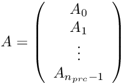

|
MIDAPACK - MIcrowave Data Analysis PACKage
1.1b
Parallel software tools for high performance CMB DA analysis
|
|
MIDAPACK - MIcrowave Data Analysis PACKage
1.1b
Parallel software tools for high performance CMB DA analysis
|
Considering a matrix  , parallelism assume is row-distributed over processes. Each processor has into memory m rows of the global matrix. Reciprocally is column-distributed, with m columns into memory. That is to say
, parallelism assume is row-distributed over processes. Each processor has into memory m rows of the global matrix. Reciprocally is column-distributed, with m columns into memory. That is to say

Reciprocally
As is a sparse martix, it doesn't store zero values. Furthermore we assume is exactly nnz nonzerovalues. Then building matrix A only require these non-zero values and theirs global columns indices, also called ELL format. Input data consists in two large tab of size m*nnz, where rows are concatenated. This input array have to be passed when calling matrix initializtaion function.
To well balance the load over processes we have to ensure number of rows time number of non-zero per row is roughly the same on each processor.
The two following examples illustrate the input data needs to build a matrix using MatInit. The first one is a sequential, the second consider 2 processors.
Two remarks about the input data structure (ELL format) :
The internal structure is more sophisticated than the ELL format. Especially, to enhance matrix operations performance, a precomputation step reshapes the data structure into several arrays : global ordered columns indices, local indices, communication ...
When using MatInit function, precomputation is performed blindly. Nevertheless, for advanced users it is possible to initialize a matrix in several steps. This enables to specify differents methods for the precomputations.